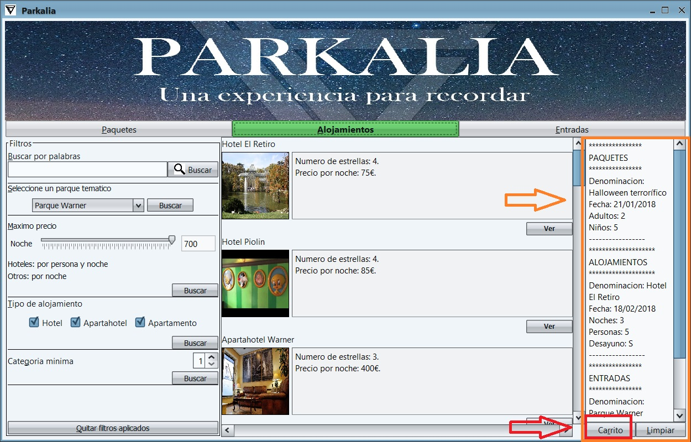
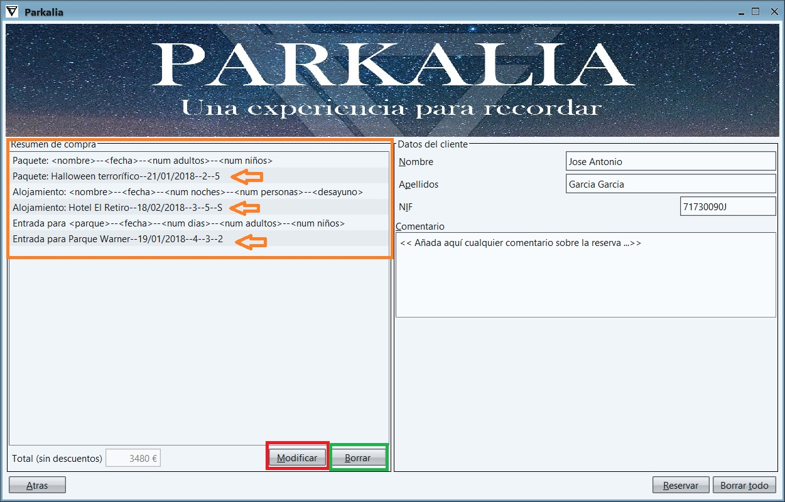
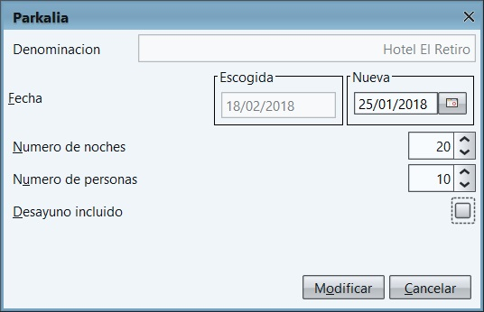
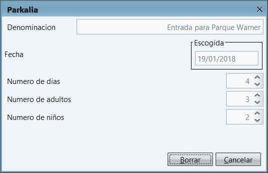

Para modificar los datos de las reservas se seguirian estos pasos:
1- Desde cualquier punto de la aplicacion que podamos ver el panel del carrito a la derecha, hacemos click en el boton "Carrito".
2- A continuacion podemos ver un nuevo panel con las reservas que hayamos realizado. Cada tipo de reserva se ve precedido por una leyenda para explicar que datos son lo que se muestran. Si seleccionamos una reserva y hacemos click en los botones "Modificar" o "Borrar", veremos que se nos abre una nueva ventana sobre que realizar cambios en la de modificar o una para comprobar si es la reserva que queremos borrar.
3- Una vez modificados los datos o asegurado que queremos borrar dicha reserva hacemos click en el boton "Modificar" o "Borrar" respectivamente. No saldra una ventana de confirmacion y si seleccionamos "Si", se realizaran los cambios oportunos.
 